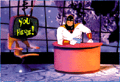
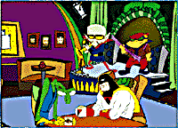

SPACE GHOST
Just because superheroes get to wear tights and shrug off bullets doesn't mean it's an easy gig. The unemployment line for cartoon heroes stretches longer than Plastic Man, and it's seldom pretty -- after a few years of pounding villains, cartoon stars are often replaced by newer good guys fighting tougher foes. Before you can say "Wonder Twin powers activate," Zan and Jana are flipping burgers and Gleek is working for spare change with an organ grinder down on 42nd Street.
Space Ghost has changed all that. A multimedia powerhouse, the former intergalactic beefcake has not only weathered his post-saving-the-Universe phase, he's thrived in it. Space Ghost Coast to Coast, his talk show airing on the Cartoon Network, has become a cult phenomenon, with a motley slate of guests ranging from TV's Gilligan, Bob Denver, to R.E.M.'s Michael Stipe to exercise guru Susan Powter. Now, with the opening of Ghost Planet at http://www.ghostplanet.com, Space Ghost stands poised to expand his empire even further. IU caught up with Space Ghost at the Locust Club, Ghost Planet's late-night hot spot, to discuss his recent foray into cyberspace, the love life of a cartoon character and the I.Q. of Thundarr the Barbarian.
Internet Underground: When did you first start surfing the 'net?
Space Ghost: I guess I've been skiing the 'net since, oh, about 10:30 a.m. this morning. What's that? Right. Surfing the 'net. Whatever. Truth is, I'm relatively new to the Internet scene. Moltar is always pushing me to get with the program. I mean, the first time I heard "World Wide Web," I thought the Black Widow had ensnared your planet in some diabolical scheme. (IU note: the Black Widow is a villain from Space Ghost's original series, The Space Ghost and Dino Boy.)
IU: Where do you hang out on Ghost Planet? What parts of Ghost Planet didn't make it into the Web site?
 SG: My favorite spot is probably the Studio, located just inside of Ghost Planet Industries. The idea of having a conversation with myself is irresistible to me. I could spend days and days in there. But I have yet to see the Ghost Planet Commissary and Video Arcade in the Web site. They make the blackest coffee in the universe and always have the latest video games, like Earth Invaders.
IU: How does Space Ghost Coast to Coast benefit or suffer from being on the Web?
SG: I don't think the show can suffer from being on the Web, unless we lose viewers to Moltar's lake of fire. And it's a great benefit, really, because people really need to see where you've been in order to know where you're going. I think I heard that on Oprah.
IU: What do you say to your critics who accuse you of being a beefy post-adolescent living out a testosterone-filled fantasy?
SG: Ghost Planet to Earth: I'm a cartoon. Hell-o!
IU: How did you enslave Zorak, your former archenemy, into serving as your bandleader? Is he getting paid overtime for being the Ghost Planet receptionist?
SG: Fortunately, Zorak was still enslaved where I had left him at the time my original series was canceled, in Omegan Prison. I like to think of Space Ghost Coast to Coast as my own little work-release program. Two years ago, Zorak was peeling space potatoes in Omegan Prison. Now he's peeling open envelopes filled with gushing fan mail! As for the receptionist, that's actually Zorak's second cousin, Stephanie. Uncanny resemblance, isn't it?
IU: How do you avoid the leagues of starry-eyed fans who scour Ghost Planet for any contact with you?
SG: Easy. Inviso-Power! It comes in handy for so many things. Free movies. Concerts. Avoiding that second date.
IU: How much do you get paid? What do you think of Letterman's huge contract with CBS?
 SG: Like all cartoons, I am paid in a currency known as the Smackeroo. All I can tell you is that they count them out individually, "One smackeroo... two smackeroos..." and it takes a very long time. Letterman's contract, from what I understand, is short on Smackeroos.
IU: Are you seeing anyone right now?
SG: No, I'm not. I am, however, writing a book that sums up my views on dating, Men Are From Mars, Women Are From Venus, So What Am I Doing in Albuquerque?
IU: What do you feel is the future of technology?
SG: Judging from my limited experience on the World Wide Web, I'd have to say the ability to download 3-D images of Pamela Lee from Baywatch.
IU: Whatever happened to your erstwhile sidekicks Jan and Jace?
SG: Jan and Jace? Let's just say they got a copy of the home game. I did not invite them back to partake of my current show. Last I heard, they were deeply into Scientology.
IU: How does cyberspace compare to outer space?
SG: Well, you can't download the lyrics to "Dancing Queen" in outer space.
IU: What about the Web do you consider evil?
SG: The thought that Stephanie Miller has her own Web page.
IU: Last, but not least, a question I have a wager on: Who would win a fight between you and Thundarr the Barbarian, and why?
SG: Yours truly, Citizen Ware. Here's a hint. In the superhero world, Thundarr's nickname is "Genius." Ask him to think an abstract thought like "What is the sound of one hand clapping?" He'll be tied up for hours, and you don't even have to lift a finger. You heard it here first.